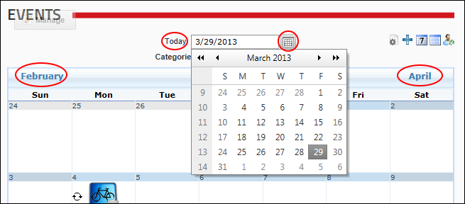

Navigating to Events (Month View)
How to navigate to an event when the Events module is displayed in the Month View. To view the Events module in month view, click the Month View button. Note: The Month view can be disabled, as can some of these navigation options.
- Click the and then choose from these options:
- To view another month: Click the linked name of the [Previous Month] or the [Next Month] ( displayed in the top left and top right corners of the Calendar respectively ) to scroll back and forward one month at a time.
- To return to the current month: Click the Today link. The current date is highlighted.
- To view any month: Click the View Calendar
 button and then select a date. See "Working with the Calendar"
button and then select a date. See "Working with the Calendar" - To filter events by category: At Categories, select the required category names from the drop down list - OR - Select All to view all categories.

Navigating to Events in Month View